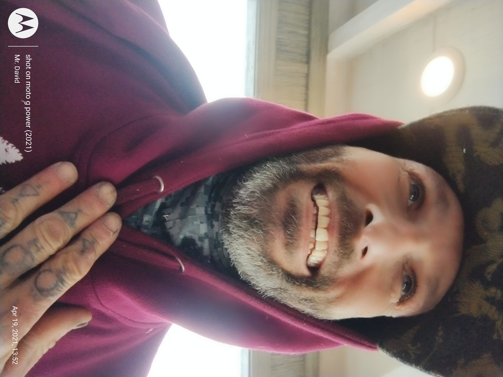
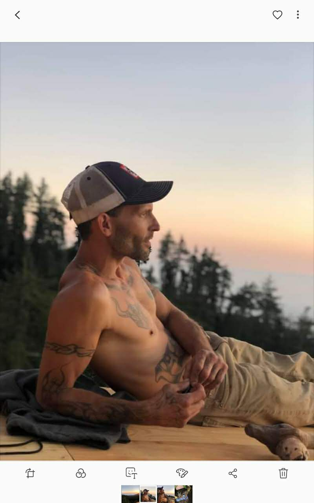
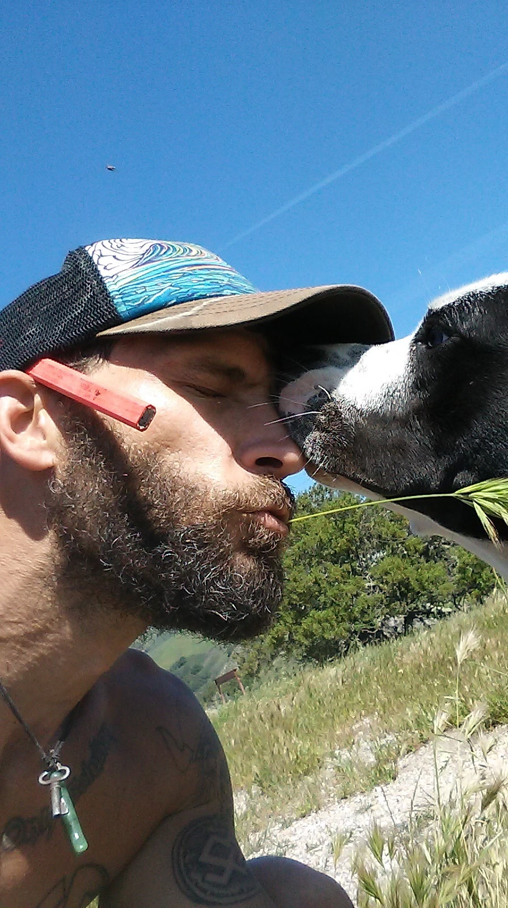
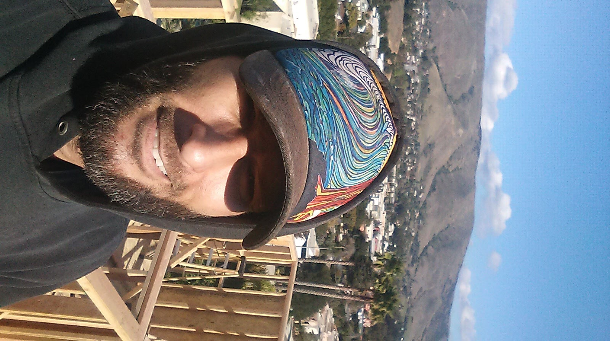
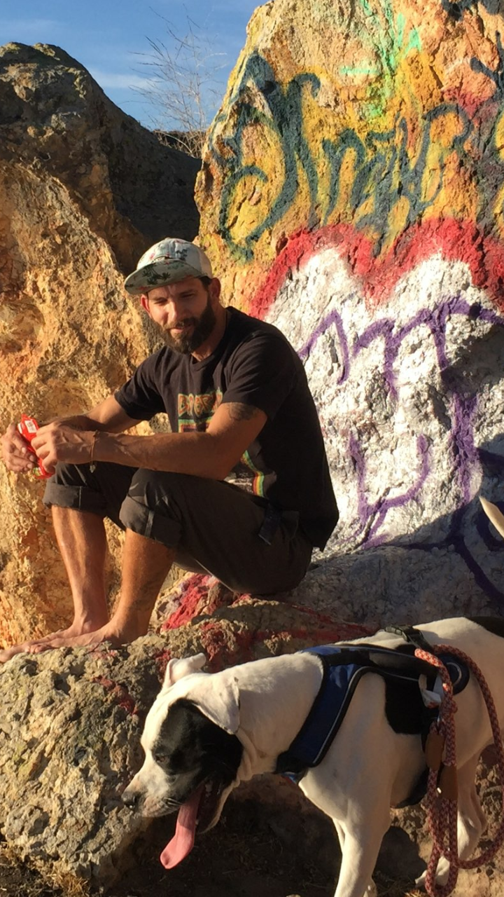

My Hero
The Man Who Never Let Go
Who He Is
David is a master carpenter, caregiver, nurse, best friend, psychologist, housekeeper, chef, and handyman .
How We Met
We met in the parking lot of a nightclub in Santa Cruz in January 2019. Through a mutual acquaintance, I was asked to give him a ride back to his truck in Big Sur, and I said yes. At the time, I had no idea that such a simple favor would become the beginning of one of the greatest loves of my life.
The very next day, he showed up at the restaurant where I was waitressing, ordered cheesecake, and with a confidence I did not quite know what to do with, asked me out. I turned him down, insisting that I preferred to do my own thing. I remember thinking, "Who does this guy think he is?" What I did not know then was that he was about to become someone I would love more deeply than I could have imagined.
But after seeing him around more, and learning that he was not only handsome and bold but also a master carpenter building a multimillion-dollar home in the area, something shifted in me. I started to see the man behind the confidence, and suddenly it all clicked. He felt different. Special. Like someone I was meant to know. So one night, I lured him into my car, and down the coast we went. The rest is history.



Before the Crash
He proposed about a year and a half later, two days before my birthday in January 2021. Fast-forward a year and six months: he was working on another project, a multimillion-dollar mini-mansion in the Carmel Valley Preserve. I was waitressing at a world-renowned restaurant called Nepenthe. Our life was perfect. We were what they call a power couple. That is when I crashed.


After the Crash
David never left my side after the accident. From that moment on, he became my constant, my comfort, my strength, and the steady heart beside me through every fear, every setback, and every small victory. Even three years later, he is still right there, loving me so faithfully that I can hardly get him to leave me alone for even a minute.
- When I woke up in the ICU, David was already there, loving me through the shock and the pain, begging me to marry him right then and there.
- Since that day, he has been so much more than my fiance. He has been my full-time caregiver, nurse, best friend, protector, housekeeper, chef, gardener, handyman, and the person who carries me through the hardest parts of life with endless love and patience.
- Every day, in a hundred small ways, he shows up for me, picking things up, handing me what I cannot reach, listening before I even finish asking, and meeting my needs with a love that is constant, tender, and unwavering.